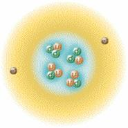
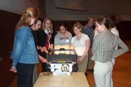

Resources for Students
Particle Physics
Muon Telescopes
Experiments
Student Work
|
Where
can I learn about particle physics?
Introduction
to Particle Physics - This link leads to a brief discussion of particle physics: quarks, leptons, anti-matter, muons, and cosmic rays. It also points to numerous links, including our favorite: a fabulous interactive tour of matter, forces, and particle accelerators.
Lectures for High School Students - This link leads to a collection of talks given to high school students by past PARTICLE Fellows. The talks cover topics like the standard model, neutrinos, Fermi Lab, and the cloud chamber. |
How do muon telescopes work?
The telescopes are made of a plastic scintillator that is
connected to a photomultiplier tube (PMT). So what are a scintillator
and a photomultiplier tube? A scintillator is a special piece
of plastic that emits a photon whenever a charged particle,
such as a muon or an electron, passes through it. The photon
travels through the plastic to the PMT. The photon hits a
photocathode in the PMT and is converted into an electron,
which starts a chain reaction to produce many more electrons.
These electrons form a current that sends a signal to the
computer and the computer records the event. This is a very
brief description; more detail about the workings of the telescope
can be found on the telescopes
page.
|
What can we use the telescopes for?
The telescopes can be used for many different experiments.
Most commonly, we measure the muon rate as a function of some
variable such as time of day, location, absorber, or paddle
separation. Be creative, you can do anything! For inspiration,
check out the experiments that
have been done before.
|
What have other students done?
Students
have done everything from putting muon detectors on airplanes
and measuring the muon rate as a function of altitude to using
muon detectors to discover several extra ceilings above their
school’s auditorium. You can look at what other students
have done by checking out
PARTICLE Day Presentations (posters and presentations given by students about the experiments and studies they have done during the school year)
Research Experience for High
School Students(a description of the work students have done over the summer at U of R on the "big" paddles)
Breaking PARTICLE News (snapshots of exciting results found by participating students)
|
| |
|
|
Department of Physics and Astronomy, University of Rochester, PO Box
270171, Rochester, NY 14627-0170, (585)-275-5306 |
|